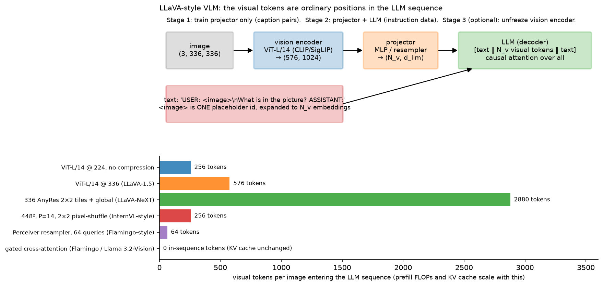

VLM architecture¶
Why this matters at staff level. This is the chapter where your perception background becomes a VLM background. Almost every production vision-language model is the same three boxes, vision encoder, projector, LLM, and the interesting decisions are all about tokens: how many an image produces, where they go in the sequence, and what that costs in prefill latency and KV cache. Strong signal is drawing the architecture, writing the four projector variants as modules, computing the visual-token count for a given resolution and tiling scheme, and turning that into a latency and memory number before anyone asks you to.
TL;DR: the interview card¶
- Canonical architecture: image, ViT, projector, then visual tokens spliced into the LLM's token sequence, then ordinary causal LM. LLaVA is the minimal instance: CLIP ViT-L/14 plus one MLP plus Vicuna.
- Vision tower: a contrastively pretrained ViT (CLIP or SigLIP). Take patch tokens rather than the pooled vector, from the penultimate layer, since the last layer is specialised for the contrastive objective.
- Four projectors, all mapping \((B, N_v, d_v) \to (B, N_q, d_{llm})\): linear with \(N_q = N_v\); MLP with \(N_q = N_v\), used by LLaVA-1.5; resampler or Q-Former where \(N_q\) is fixed by learned queries, used by Flamingo and BLIP-2; gated cross-attention with \(N_q = 0\) in-sequence, where text attends to the image inside the LLM, used by Flamingo and Llama 3.2-Vision.
- Token count is the cost model. ViT-L/14 at \(336^2\) gives \(N_v = (336/14)^2 = 576\) tokens per image. Prefill FLOPs are about \(2 P N\) for \(P\) non-embedding parameters and \(N\) tokens. KV cache is \(2 \cdot L \cdot N \cdot H_{kv} \cdot d_{head} \cdot \text{bytes}\).
- Compression levers: average pooling, \(k\times k\) pixel shuffle (space-to-depth, no information lost, tokens divided by \(k^2\)), learned queries, token pruning, and AnyRes tiling, which multiplies tokens instead of dividing them: 5 tiles at 576 is 2,880.
- Training stages: projector-only alignment on caption pairs, then visual instruction tuning with projector and LLM unfrozen, then optional vision-encoder unfreezing, which OCR, document and high-resolution work need.
- Position ids: visual tokens occupy ordinary consecutive positions in the simple design. Qwen2-VL's M-RoPE instead gives them \((t, h, w)\) coordinates.
- Data: image-caption pairs align, instruction data teaches following, OCR and document data teach reading, grounding data with boxes written as text teaches pointing.
1. Intuition first¶
An LLM reads a sequence of \(d_{llm}\)-dimensional vectors. It does not care where they came
from. Run the image through a ViT to get 576 patch tokens of width 1024, multiply each by a
matrix to get width 4096, and paste them into the sequence where the <image> placeholder
was. The LLM's causal attention now lets every text token after the image attend to every
patch. That is a VLM.

Look at the bottom panel. Every design choice in this chapter is a point on that axis. LLaVA-1.5 at 336 px costs 576 tokens, more than most user prompts. LLaVA-NeXT's AnyRes tiling costs 2,880, a 5x increase in prefill compute and KV cache for one image. A Perceiver resampler costs 64 regardless of resolution. Gated cross-attention costs zero in-sequence tokens but adds parameters and FLOPs inside every adapted LLM layer.
The three boxes, with the shapes that matter:
flowchart LR
A["image (B, 3, 336, 336)"] --> B["ViT-L/14<br/>(B, 576, 1024)"]
B --> C["projector<br/>(B, N_q, 4096)"]
T["'USER: <image>\nWhat does the sign say? ASSISTANT:'<br/>(B, T)"] --> D["embed (B, T, 4096)"]
C --> E["splice at the <image> slot<br/>(B, T-1+N_q, 4096)"]
D --> E
E --> F["causal LLM<br/>(B, T-1+N_q, V)"]
F --> G["loss on text positions only"]Two details in that diagram are where implementations go wrong. <image> is one token id in
input_ids that gets expanded to \(N_q\) embeddings, so the sequence length changes between
input_ids and inputs_embeds, and every downstream index (labels, attention mask, position
ids) has to be rebuilt. And the loss has to ignore the visual positions, because there is no
ground-truth token to predict there.
2. The math¶
2.1 The visual-token count¶
For a vision tower with patch size \(P\) at resolution \(H\times W\), one tile produces
With a \(k\times k\) merge (pooling or pixel shuffle) and \(n_{\text{tiles}}\) tiles, and with a resampler overriding everything:
Worked examples you should be able to produce from memory:
| Design | \(H\) | \(P\) | \(k\) | tiles | \(N_q\) |
|---|---|---|---|---|---|
| LLaVA-1 (CLIP ViT-L/14 at 224) | 224 | 14 | 1 | 1 | 256 |
| LLaVA-1.5 (at 336) | 336 | 14 | 1 | 1 | 576 |
| LLaVA-NeXT AnyRes (4 tiles plus global) | 336/tile | 14 | 1 | 5 | 2,880 |
| InternVL-style pixel shuffle at 448 | 448 | 14 | 2 | 1 | 256 |
| Flamingo resampler | any | 64 |
2.2 What those tokens cost¶
Let the LLM have \(L\) layers, width \(d\), \(H_{kv}\) key/value heads of size \(d_{head}\), and \(P_{nz}\) non-embedding parameters. For a prompt of \(N = T_{\text{text}} + N_q\) tokens:
Prefill FLOPs. Every parameter is used once per token in a forward pass, at two FLOPs per multiply-add:
where the second term is attention.
KV cache bytes.
with \(b\) bytes per element, 2 for fp16 or bf16. The leading 2 counts K and V.
Worked example. A Llama-3-8B-shaped model: \(L = 32\), \(H_{kv} = 8\) with GQA, \(d_{head} = 128\), \(P_{nz} \approx 7\times10^9\), bf16. One LLaVA-1.5-style image at 576 tokens costs \(2 \cdot 32 \cdot 576 \cdot 8 \cdot 128 \cdot 2 = 75.5\) MB of KV cache, against 7.9 MB for a 60-token text prompt, so the image is 90% of the KV cache for that request. Prefill is \(2 \cdot 7\times10^9 \cdot 576 \approx 8.1\) TFLOPs against 0.84 TFLOPs for the text.
With AnyRes at 2,880 tokens: 377 MB of KV cache and 40 TFLOPs of prefill per image. At a realistic 200 TFLOP/s effective throughput that is 200 ms of prefill before the first token. This arithmetic is why token compression exists, and it is the answer interviewers want when they ask what adding vision costs you.
A VLM request is prefill-dominated in a way a text request is not. Decode is unchanged, one token at a time over a longer cache, so vision moves your serving profile toward compute-bound prefill. See inference systems for the batching consequences and efficient attention and the KV cache for the cache arithmetic in general.
2.3 The four projectors¶
All four map \((B, N_v, d_v) \to (B, N_q, d_{llm})\). They differ in \(N_q\) and in where the image and text interact.
Linear. \(z = f W + b\) with \(W \in \R^{d_v\times d_{llm}}\) and \(N_q = N_v\). This is LLaVA-1's projector. Stage 1 converges quickly with it, and it preserves the one-to-one correspondence between a token and an image region, so a box prediction can be traced back to the patches that produced it.
MLP. \(z = \text{GELU}(fW_1 + b_1)W_2 + b_2\) with \(N_q = N_v\). LLaVA-1.5 found that a two-layer MLP beats the linear map at no meaningful cost, because the non-linearity lets the projector do some feature transformation rather than a pure basis change.
Perceiver resampler and Q-Former. \(N_q\) learned query vectors cross-attend to the image features:
repeated for a few layers, then projected to \(d_{llm}\). Output length is \(N_q\) regardless of \(N_v\), so resolution and tiling become free from the LLM's point of view, and video with hundreds of frames becomes tractable. A Q-Former additionally runs self-attention among the queries each layer so they can specialise and de-duplicate, and in BLIP-2 it is pretrained with its own image-text objectives before being attached to the LLM. The cost is a fixed bottleneck: if 64 queries cannot carry the text in a document, no amount of LLM capacity recovers it, which is why OCR-heavy models moved away from resamplers.
Gated cross-attention. The image never enters the sequence. New layers are inserted between the LLM's frozen layers, where the text hidden states cross-attend to the visual features:
with \(\alpha = \beta = 0\) at initialisation, so the adapted model is exactly the original LLM at step 0 and training starts from a known-good state. This is Flamingo's design and Llama 3.2-Vision's. The LLM's own weights can stay frozen, preserving text ability, the KV cache does not grow with \(N_v\), and many images can be attended to cheaply. The costs are extra parameters and FLOPs in every adapted layer for every text token including during decode, a more invasive change to the serving stack, and weaker performance per training FLOP than splicing on single-image benchmarks, which is why the LLaVA pattern dominates open models.
2.4 Splicing, attention masks and position ids¶
Let the prompt have the <image> placeholder at position \(p\). After splicing,
Three bookkeeping rules follow.
- Position ids are \(0, 1, \dots, T-2+N_q\), consecutive, with the visual tokens consuming \(N_q\) positions. Qwen2-VL's M-RoPE instead assigns each visual token a 3-D position \((t, h, w)\) so that an image's 2-D structure and a video's time axis are encoded in the rotary embedding, and the text positions continue from the maximum, which also lets the model extrapolate to more tokens than it saw in training.
- The attention mask is the standard causal mask over the merged length. Visual tokens attend to each other causally in the naive implementation, which is a slightly odd choice given that an image has no left-to-right order, and it works anyway. Some models make the visual block bidirectional, which is a strict relaxation and needs a custom mask.
- Labels are
-100(ignore) at every visual position and at every prompt position, so the loss is computed only on the assistant's response tokens.
2.5 The training stages¶
Stage 1, feature alignment. Freeze the vision encoder and the LLM and train only the projector on image-caption pairs. LLaVA used 558k filtered CC3M captions. The objective is the ordinary next-token loss on the caption, and the purpose is to learn the map from the vision tower's basis into the LLM's embedding space. It is cheap, hours on a few GPUs, because only the projector has gradients.
Stage 2, visual instruction tuning. Unfreeze the LLM while the projector keeps training, on multi-turn instruction data: LLaVA's 158k GPT-4-generated conversations, then the 665k mixture of LLaVA-1.5 including VQA, OCR and region data. This teaches the model to use the visual tokens to follow instructions, and it is where the model's character comes from.
Stage 3, optional, unfreeze the vision encoder. Needed when the target domain is far from the contrastive pretraining distribution: documents, charts, screenshots, high-resolution scenes. It costs more memory and risks degrading the encoder, so it is typically done with a learning rate ten times lower than the LLM's.
A recurring failure is unfreezing the LLM in stage 1. With a randomly initialised projector the visual tokens are noise, so the LLM learns to ignore them while its text ability degrades. Stage 1 exists to make the visual tokens meaningful before the LLM adapts.
2.6 Data¶
| Data type | Teaches | Example sources | Typical scale |
|---|---|---|---|
| Image-caption pairs | Alignment of the projector | CC3M/CC12M, LAION, COYO | 0.5M to 1B |
| Visual instruction data | Following instructions about an image | LLaVA-Instruct, GPT-4 generated from COCO annotations | 100k to 1M |
| VQA and academic task data | Short-answer formats, chart and diagram reading | VQAv2, GQA, OK-VQA, DocVQA, ChartQA, TextVQA | 100k to 1M |
| OCR and document data | Reading dense text, layout | Synthetic renders, PDF corpora, scanned documents | 1M to 100M |
| Grounding data | Pointing: boxes and points as text | Visual Genome, RefCOCO, generated region captions | 100k to 10M |
| Interleaved image-text documents | Multi-image context, in-context learning | MMC4, OBELICS | 100M+ |
Two notes for a reader with an OCR background. Boxes become text: a grounding example is an
ordinary next-token problem where the target is a string like
<box>0.12 0.44 0.31 0.57</box>, or special coordinate tokens in Qwen-VL. Nothing in the
architecture knows about geometry, the model learns the format. And OCR data is the strongest
argument for high resolution: at 336 px a full page of text occupies a few pixels per
character and is unreadable regardless of model size. That is the real driver of AnyRes and
native-resolution designs, and it connects to
document understanding system design.
3. Implementation¶
3.1 The four projectors¶
class LinearProjector(nn.Module):
"""(B, N_v, d_v) -> (B, N_v, d_llm)."""
def __init__(self, d_v: int, d_llm: int) -> None:
super().__init__()
self.proj = nn.Linear(d_v, d_llm)
def forward(self, feats: torch.Tensor) -> torch.Tensor:
return self.proj(feats) # (B, N_v, d_llm)
class MLPProjector(nn.Module):
"""(B, N_v, d_v) -> (B, N_v, d_llm) via Linear -> GELU -> Linear."""
def __init__(self, d_v: int, d_llm: int) -> None:
super().__init__()
self.fc1 = nn.Linear(d_v, d_llm)
self.fc2 = nn.Linear(d_llm, d_llm)
def forward(self, feats: torch.Tensor) -> torch.Tensor:
h = torch.nn.functional.gelu(self.fc1(feats)) # (B, N_v, d_llm)
return self.fc2(h) # (B, N_v, d_llm)
class PerceiverResampler(nn.Module):
"""Learned queries attend to visual features: (B, N_v, d_v) -> (B, N_q, d_llm)."""
def __init__(self, d_v, d_llm, n_queries, n_heads, depth=2, d_inner=None) -> None:
super().__init__()
d = d_inner or d_llm
self.queries = nn.Parameter(torch.randn(1, n_queries, d) * 0.02) # (1, N_q, d)
self.layers = nn.ModuleList()
for _ in range(depth):
self.layers.append(nn.ModuleDict({
"ln_q": nn.LayerNorm(d), "ln_kv": nn.LayerNorm(d_v),
"xattn": MultiHeadCrossAttention(d, d_v, n_heads),
"ln_mlp": nn.LayerNorm(d), "mlp": MLP(d),
}))
self.out = nn.Linear(d, d_llm)
def forward(self, feats: torch.Tensor) -> torch.Tensor:
B = feats.shape[0]
q = self.queries.expand(B, -1, -1) # (B, N_q, d)
for layer in self.layers:
q = q + layer["xattn"](layer["ln_q"](q), layer["ln_kv"](feats)) # (B, N_q, d)
q = q + layer["mlp"](layer["ln_mlp"](q)) # (B, N_q, d)
return self.out(q) # (B, N_q, d_llm)
QFormer in the same file adds self_attn over the queries before the cross-attention in
each layer. The test asserts what matters about both: the output length is \(N_q\) whether
\(N_v\) is 9 or 50.
class GatedCrossAttentionAdapter(nn.Module):
"""text (B, T, d_llm) cross-attends to feats (B, N_v, d_v); zero-gated at init."""
def __init__(self, d_llm: int, d_v: int, n_heads: int) -> None:
super().__init__()
self.ln_t = nn.LayerNorm(d_llm)
self.ln_v = nn.LayerNorm(d_v)
self.xattn = MultiHeadCrossAttention(d_llm, d_v, n_heads)
self.gate_attn = nn.Parameter(torch.zeros(1)) # scalar; tanh(0) = 0
self.ln_m = nn.LayerNorm(d_llm)
self.mlp = MLP(d_llm)
self.gate_mlp = nn.Parameter(torch.zeros(1)) # scalar
def forward(self, text: torch.Tensor, feats: torch.Tensor) -> torch.Tensor:
text = text + torch.tanh(self.gate_attn) * self.xattn(self.ln_t(text), self.ln_v(feats)) # (B, T, d_llm)
text = text + torch.tanh(self.gate_mlp) * self.mlp(self.ln_m(text)) # (B, T, d_llm)
return text
The tanh of a zero-initialised scalar is exactly 0, so adapter(text, feats) == text at
step 0, which the test asserts with torch.allclose. That property is the point: you can
insert these into a frozen, already-good LLM and training begins from its exact behaviour
rather than from a perturbation of it.
3.2 Splicing visual tokens into the sequence¶
def merge_visual_tokens(text_embeds, input_ids, visual, image_token_id):
"""Replace the single <image> slot with N_v visual embeddings."""
B, T, d = text_embeds.shape
pos = (input_ids == image_token_id).nonzero() # (B, 2): (row, col)
if pos.shape[0] != B or not bool((pos[:, 1] == pos[0, 1]).all()):
raise ValueError("expected exactly one <image> token per row, at the same column")
p = int(pos[0, 1])
N_v = visual.shape[1]
merged = torch.cat([text_embeds[:, :p], visual, text_embeds[:, p + 1:]], dim=1) # (B, T-1+N_v, d)
L = merged.shape[1]
position_ids = torch.arange(L, device=text_embeds.device)[None].expand(B, -1) # (B, L)
is_visual = torch.zeros(B, L, dtype=torch.bool, device=text_embeds.device) # (B, L)
is_visual[:, p:p + N_v] = True
return merged, position_ids, is_visual
Restricting to one image at a fixed column keeps the code a cat instead of a scatter.
Production implementations handle ragged placements with an index_put over a pre-allocated
(B, L_max, d) buffer plus a padding mask. The returned is_visual mask is what the loss
uses to skip those positions:
def vlm_lm_loss(logits, input_ids, is_visual, image_token_id):
"""Next-token loss on text positions only."""
B, L, V = logits.shape
N_v = int(is_visual[0].sum())
p = int(is_visual[0].nonzero()[0, 0])
ignore = torch.full((B, N_v), -100, dtype=torch.long, device=input_ids.device) # (B, N_v)
targets = torch.cat([input_ids[:, :p], ignore, input_ids[:, p + 1:]], dim=1) # (B, L)
pred = logits[:, :-1].reshape(-1, V) # (B*(L-1), V)
tgt = targets[:, 1:].reshape(-1) # (B*(L-1),)
return nn.functional.cross_entropy(pred, tgt, ignore_index=-100)
Note the off-by-one that trips everyone. The logit at merged position \(i\) predicts the token at position \(i+1\), so the last visual position produces the prediction for the first text token after the image. That position must not be ignored. You ignore positions whose target is visual, not whose input is visual. The test checks this against a hand-computed three-term loss.
3.3 The mini VLM¶
class MiniVLM(nn.Module):
def __init__(self, vision, d_v, lm, d_llm, image_token_id) -> None:
super().__init__()
self.vision = vision
self.projector = MLPProjector(d_v, d_llm)
self.lm = lm
self.image_token_id = image_token_id
def forward(self, images, input_ids):
feats = self.vision(images) # (B, N_v, d_v)
visual = self.projector(feats) # (B, N_v, d_llm)
text = self.lm.tok(input_ids) # (B, T, d_llm)
merged, position_ids, is_visual = merge_visual_tokens(
text, input_ids, visual, self.image_token_id) # (B, L, d_llm)
logits = self.lm(merged, position_ids) # (B, L, V)
return logits, is_visual
TinyCausalLM accepts embeddings rather than ids precisely so a caller can splice. Any real
LLM wrapper needs the same inputs_embeds entry point. Its causal mask is built over the
merged length, and its position embedding is indexed by the position_ids the merge
produced.
3.4 Token compression¶
def pixel_shuffle_merge(grid: torch.Tensor, k: int) -> torch.Tensor:
"""Space-to-depth: (B, h, w, d) -> (B, (h/k)*(w/k), k*k*d). No information discarded."""
B, h, w, d = grid.shape
x = grid.view(B, h // k, k, w // k, k, d) # (B, h/k, k, w/k, k, d)
x = x.permute(0, 1, 3, 2, 4, 5) # (B, h/k, w/k, k, k, d)
return x.reshape(B, (h // k) * (w // k), k * k * d) # (B, N/k², k*k*d)
def anyres_tiles(image: torch.Tensor, tile: int) -> torch.Tensor:
"""(B, C, H, W) -> (B*n_tiles, C, tile, tile): encode each tile at native training resolution."""
B, C, H, W = image.shape
x = image.view(B, C, H // tile, tile, W // tile, tile) # (B, C, nh, t, nw, t)
x = x.permute(0, 2, 4, 1, 3, 5) # (B, nh, nw, C, t, t)
return x.reshape(B * (H // tile) * (W // tile), C, tile, tile)
Pixel shuffle is the compression to reach for first. Unlike average pooling it is lossless at
the token level, since the \(k^2\) neighbouring feature vectors are concatenated rather than
averaged, and the following MLP learns what to keep. Pairing anyres_tiles, which multiplies
tokens by \(n_{\text{tiles}}\), with pixel_shuffle_merge, which divides by \(k^2\), is how
Qwen-VL and InternVL get high resolution at a bounded token budget.
Full implementation: src/mlbook/multimodal/projectors.py
"""Vision -> LLM projectors. Every module maps visual features ``(B, N_v, d_v)``
to LLM-space tokens ``(B, N_q, d_llm)``:
* ``LinearProjector`` N_q = N_v (LLaVA-1)
* ``MLPProjector`` N_q = N_v (LLaVA-1.5: Linear-GELU-Linear)
* ``PerceiverResampler`` N_q = fixed (Flamingo / BLIP-2 Q-Former style: learned queries cross-attend to features)
* ``GatedCrossAttentionAdapter`` the visual tokens are NOT inserted into the LLM sequence; instead
text hidden states (B, T, d_llm) cross-attend to them through a tanh-gated
block initialised at zero (Flamingo, Llama 3.2-Vision).
"""
from __future__ import annotations
import torch
from torch import nn
from .attention_block import MLP, MultiHeadCrossAttention, MultiHeadSelfAttention
class LinearProjector(nn.Module):
"""(B, N_v, d_v) -> (B, N_v, d_llm). One matrix W in R^{d_v x d_llm}."""
def __init__(self, d_v: int, d_llm: int) -> None:
super().__init__()
self.proj = nn.Linear(d_v, d_llm)
def forward(self, feats: torch.Tensor) -> torch.Tensor:
return self.proj(feats) # (B, N_v, d_llm)
class MLPProjector(nn.Module):
"""(B, N_v, d_v) -> (B, N_v, d_llm) via Linear(d_v, d_llm) -> GELU -> Linear(d_llm, d_llm)."""
def __init__(self, d_v: int, d_llm: int) -> None:
super().__init__()
self.fc1 = nn.Linear(d_v, d_llm)
self.fc2 = nn.Linear(d_llm, d_llm)
def forward(self, feats: torch.Tensor) -> torch.Tensor:
h = torch.nn.functional.gelu(self.fc1(feats)) # (B, N_v, d_llm)
return self.fc2(h) # (B, N_v, d_llm)
class PerceiverResampler(nn.Module):
"""Learned queries attend to visual features: (B, N_v, d_v) -> (B, N_q, d_llm).
Each layer: q = q + CrossAttn(LN(q), feats); q = q + MLP(LN(q)). Output length is
fixed at N_q regardless of N_v (and of resolution), which bounds the LLM cost.
"""
def __init__(self, d_v: int, d_llm: int, n_queries: int, n_heads: int, depth: int = 2, d_inner: int | None = None) -> None:
super().__init__()
d = d_inner or d_llm
self.queries = nn.Parameter(torch.randn(1, n_queries, d) * 0.02) # (1, N_q, d)
self.layers = nn.ModuleList()
for _ in range(depth):
self.layers.append(nn.ModuleDict({
"ln_q": nn.LayerNorm(d), "ln_kv": nn.LayerNorm(d_v),
"xattn": MultiHeadCrossAttention(d, d_v, n_heads),
"ln_mlp": nn.LayerNorm(d), "mlp": MLP(d),
}))
self.out = nn.Linear(d, d_llm)
def forward(self, feats: torch.Tensor) -> torch.Tensor:
B = feats.shape[0]
q = self.queries.expand(B, -1, -1) # (B, N_q, d)
for layer in self.layers:
q = q + layer["xattn"](layer["ln_q"](q), layer["ln_kv"](feats)) # (B, N_q, d)
q = q + layer["mlp"](layer["ln_mlp"](q)) # (B, N_q, d)
return self.out(q) # (B, N_q, d_llm)
class QFormer(nn.Module):
"""BLIP-2 style Q-Former: learned queries with self-attention AND cross-attention per layer.
(B, N_v, d_v) -> (B, N_q, d_llm). Differs from the Perceiver resampler by letting queries
talk to each other (self-attention) before reading the image.
"""
def __init__(self, d_v: int, d_llm: int, n_queries: int, n_heads: int, depth: int = 2, d_inner: int | None = None) -> None:
super().__init__()
d = d_inner or d_llm
self.queries = nn.Parameter(torch.randn(1, n_queries, d) * 0.02) # (1, N_q, d)
self.layers = nn.ModuleList()
for _ in range(depth):
self.layers.append(nn.ModuleDict({
"ln_s": nn.LayerNorm(d), "self_attn": MultiHeadSelfAttention(d, n_heads),
"ln_q": nn.LayerNorm(d), "ln_kv": nn.LayerNorm(d_v),
"xattn": MultiHeadCrossAttention(d, d_v, n_heads),
"ln_mlp": nn.LayerNorm(d), "mlp": MLP(d),
}))
self.out = nn.Linear(d, d_llm)
def forward(self, feats: torch.Tensor) -> torch.Tensor:
B = feats.shape[0]
q = self.queries.expand(B, -1, -1) # (B, N_q, d)
for layer in self.layers:
q = q + layer["self_attn"](layer["ln_s"](q)) # (B, N_q, d)
q = q + layer["xattn"](layer["ln_q"](q), layer["ln_kv"](feats)) # (B, N_q, d)
q = q + layer["mlp"](layer["ln_mlp"](q)) # (B, N_q, d)
return self.out(q) # (B, N_q, d_llm)
class GatedCrossAttentionAdapter(nn.Module):
"""Flamingo-style gated cross-attention inserted between frozen LLM layers.
``text`` (B, T, d_llm) cross-attends to ``feats`` (B, N_v, d_v):
text = text + tanh(g_a) * CrossAttn(LN(text), feats)
text = text + tanh(g_m) * MLP(LN(text))
with ``g_a = g_m = 0`` at init, so the LLM's behaviour is unchanged at step 0.
Output (B, T, d_llm). The image never enters the token sequence, so the KV cache
of the LLM does not grow with N_v.
"""
def __init__(self, d_llm: int, d_v: int, n_heads: int) -> None:
super().__init__()
self.ln_t = nn.LayerNorm(d_llm)
self.ln_v = nn.LayerNorm(d_v)
self.xattn = MultiHeadCrossAttention(d_llm, d_v, n_heads)
self.gate_attn = nn.Parameter(torch.zeros(1)) # scalar gate, tanh(0) = 0
self.ln_m = nn.LayerNorm(d_llm)
self.mlp = MLP(d_llm)
self.gate_mlp = nn.Parameter(torch.zeros(1)) # scalar gate
def forward(self, text: torch.Tensor, feats: torch.Tensor) -> torch.Tensor:
text = text + torch.tanh(self.gate_attn) * self.xattn(self.ln_t(text), self.ln_v(feats)) # (B, T, d_llm)
text = text + torch.tanh(self.gate_mlp) * self.mlp(self.ln_m(text)) # (B, T, d_llm)
return text
Full implementation: src/mlbook/multimodal/vlm.py
"""A mini vision-language model in the LLaVA pattern:
image (B, C, H, W) --vision encoder--> (B, N_v, d_v) --projector--> (B, N_v, d_llm)
text ids (B, T) --embedding--> (B, T, d_llm)
sequence = [text before <image>] ++ [visual tokens] ++ [text after] (B, T - 1 + N_v, d_llm)
causal LM over the merged sequence; loss only on text positions after the image.
The image placeholder token ``image_token_id`` occupies exactly one slot in the
input ids and is *expanded* to N_v visual embeddings.
"""
from __future__ import annotations
import torch
from torch import nn
from .attention_block import TransformerBlock
from .patch_embed import PatchEmbedLinear
from .projectors import MLPProjector
class ToyVisionEncoder(nn.Module):
"""Patch-embed + Transformer blocks, returns ALL patch tokens: (B, C, H, W) -> (B, N_v, d_v)."""
def __init__(self, image_size: int, patch: int, in_channels: int, d_v: int, depth: int, n_heads: int) -> None:
super().__init__()
n = (image_size // patch) ** 2
self.embed = PatchEmbedLinear(in_channels, patch, d_v)
self.pos = nn.Parameter(torch.zeros(1, n, d_v)) # (1, N_v, d_v)
nn.init.trunc_normal_(self.pos, std=0.02)
self.blocks = nn.ModuleList([TransformerBlock(d_v, n_heads) for _ in range(depth)])
self.norm = nn.LayerNorm(d_v)
def forward(self, x: torch.Tensor) -> torch.Tensor:
t = self.embed(x) + self.pos # (B, N_v, d_v)
for blk in self.blocks:
t = blk(t) # (B, N_v, d_v)
return self.norm(t) # (B, N_v, d_v)
class TinyCausalLM(nn.Module):
"""Decoder-only LM that accepts input *embeddings*: (B, T, d_llm) -> logits (B, T, V)."""
def __init__(self, vocab: int, max_len: int, d_llm: int, depth: int, n_heads: int) -> None:
super().__init__()
self.tok = nn.Embedding(vocab, d_llm)
self.pos = nn.Embedding(max_len, d_llm)
self.blocks = nn.ModuleList([TransformerBlock(d_llm, n_heads) for _ in range(depth)])
self.norm = nn.LayerNorm(d_llm)
self.head = nn.Linear(d_llm, vocab, bias=False)
def forward(self, embeds: torch.Tensor, position_ids: torch.Tensor) -> torch.Tensor:
B, T, _ = embeds.shape
x = embeds + self.pos(position_ids) # (B, T, d_llm)
causal = torch.full((T, T), -1e9, device=embeds.device).triu(1) # (T, T): 0 on/below diag
for blk in self.blocks:
x = blk(x, causal[None, None]) # (B, T, d_llm)
return self.head(self.norm(x)) # (B, T, V)
def merge_visual_tokens(
text_embeds: torch.Tensor, input_ids: torch.Tensor, visual: torch.Tensor, image_token_id: int
) -> tuple[torch.Tensor, torch.Tensor, torch.Tensor]:
"""Replace the single ``<image>`` slot with N_v visual embeddings.
``text_embeds`` (B, T, d), ``input_ids`` (B, T) with exactly one image token per row,
``visual`` (B, N_v, d). Returns (merged (B, T-1+N_v, d), position_ids (B, T-1+N_v),
is_visual (B, T-1+N_v) bool). Every row must have the image token at the same position
(true after left-aligned prompt templating; general ragged merging is a scatter).
"""
B, T, d = text_embeds.shape
pos = (input_ids == image_token_id).nonzero() # (B, 2): (row, col)
if pos.shape[0] != B or not bool((pos[:, 1] == pos[0, 1]).all()):
raise ValueError("expected exactly one <image> token per row, at the same column")
p = int(pos[0, 1])
N_v = visual.shape[1]
merged = torch.cat([text_embeds[:, :p], visual, text_embeds[:, p + 1 :]], dim=1) # (B, T-1+N_v, d)
L = merged.shape[1]
position_ids = torch.arange(L, device=text_embeds.device)[None].expand(B, -1) # (B, L)
is_visual = torch.zeros(B, L, dtype=torch.bool, device=text_embeds.device) # (B, L)
is_visual[:, p : p + N_v] = True
return merged, position_ids, is_visual
class MiniVLM(nn.Module):
"""Vision encoder -> projector -> causal LM with visual-token insertion.
``forward(images (B, C, H, W), input_ids (B, T))`` -> logits (B, T-1+N_v, V) and the
``is_visual`` mask (B, T-1+N_v) so the caller can drop visual positions from the loss.
"""
def __init__(self, vision: ToyVisionEncoder, d_v: int, lm: TinyCausalLM, d_llm: int, image_token_id: int) -> None:
super().__init__()
self.vision = vision
self.projector = MLPProjector(d_v, d_llm)
self.lm = lm
self.image_token_id = image_token_id
def forward(self, images: torch.Tensor, input_ids: torch.Tensor) -> tuple[torch.Tensor, torch.Tensor]:
feats = self.vision(images) # (B, N_v, d_v)
visual = self.projector(feats) # (B, N_v, d_llm)
text = self.lm.tok(input_ids) # (B, T, d_llm)
merged, position_ids, is_visual = merge_visual_tokens(text, input_ids, visual, self.image_token_id) # (B, L, d_llm)
logits = self.lm(merged, position_ids) # (B, L, V)
return logits, is_visual
def vlm_lm_loss(logits: torch.Tensor, input_ids: torch.Tensor, is_visual: torch.Tensor, image_token_id: int) -> torch.Tensor:
"""Next-token loss on text positions only.
``logits`` (B, L, V) over the merged sequence; ``input_ids`` (B, T) original text with one
image token; ``is_visual`` (B, L). Targets are built by expanding the image slot with
``ignore_index`` (-100) so no loss is computed on predicting visual tokens.
"""
B, L, V = logits.shape
N_v = int(is_visual[0].sum())
p = int(is_visual[0].nonzero()[0, 0])
ignore = torch.full((B, N_v), -100, dtype=torch.long, device=input_ids.device) # (B, N_v)
targets = torch.cat([input_ids[:, :p], ignore, input_ids[:, p + 1 :]], dim=1) # (B, L)
pred = logits[:, :-1].reshape(-1, V) # (B*(L-1), V)
tgt = targets[:, 1:].reshape(-1) # (B*(L-1),)
return nn.functional.cross_entropy(pred, tgt, ignore_index=-100)
Full implementation: src/mlbook/multimodal/token_compression.py
"""Ways to reduce the number of visual tokens fed to an LLM.
All functions take a grid of visual tokens ``(B, h, w, d)`` or a sequence
``(B, N, d)`` and return fewer tokens. The KV cache and prefill cost of the
LLM scale with the number of tokens, so these are the levers that decide
whether a high-resolution or multi-image request fits a latency budget.
"""
from __future__ import annotations
import torch
from torch import nn
def average_pool_tokens(grid: torch.Tensor, k: int) -> torch.Tensor:
"""Average each k x k block: (B, h, w, d) -> (B, (h/k)*(w/k), d)."""
B, h, w, d = grid.shape
x = grid.view(B, h // k, k, w // k, k, d) # (B, h/k, k, w/k, k, d)
x = x.mean(dim=(2, 4)) # (B, h/k, w/k, d)
return x.reshape(B, (h // k) * (w // k), d) # (B, N/k^2, d)
def pixel_shuffle_merge(grid: torch.Tensor, k: int) -> torch.Tensor:
"""Space-to-depth ("pixel unshuffle", InternVL / Qwen-VL style): (B, h, w, d) -> (B, (h/k)*(w/k), k*k*d).
No information is discarded: k x k neighbouring tokens are CONCATENATED along the channel
axis, and an MLP afterwards maps k*k*d -> d_llm. Token count drops by k^2.
"""
B, h, w, d = grid.shape
x = grid.view(B, h // k, k, w // k, k, d) # (B, h/k, k, w/k, k, d)
x = x.permute(0, 1, 3, 2, 4, 5) # (B, h/k, w/k, k, k, d)
return x.reshape(B, (h // k) * (w // k), k * k * d) # (B, N/k^2, k*k*d)
class PixelShuffleProjector(nn.Module):
"""pixel_shuffle_merge followed by an MLP: (B, h, w, d_v) -> (B, N/k^2, d_llm)."""
def __init__(self, d_v: int, d_llm: int, k: int) -> None:
super().__init__()
self.k = k
self.norm = nn.LayerNorm(k * k * d_v)
self.fc1 = nn.Linear(k * k * d_v, d_llm)
self.fc2 = nn.Linear(d_llm, d_llm)
def forward(self, grid: torch.Tensor) -> torch.Tensor:
x = self.norm(pixel_shuffle_merge(grid, self.k)) # (B, N/k^2, k*k*d_v)
return self.fc2(torch.nn.functional.gelu(self.fc1(x))) # (B, N/k^2, d_llm)
def prune_tokens_by_score(tokens: torch.Tensor, scores: torch.Tensor, keep: int) -> tuple[torch.Tensor, torch.Tensor]:
"""Keep the ``keep`` highest-scoring tokens per example (order preserved).
``tokens`` (B, N, d), ``scores`` (B, N) e.g. CLS-attention or text-relevance. Returns
(kept (B, keep, d), indices (B, keep)).
"""
idx = scores.topk(keep, dim=1).indices # (B, keep)
idx = idx.sort(dim=1).values # (B, keep), restore spatial order
kept = torch.gather(tokens, 1, idx[:, :, None].expand(-1, -1, tokens.shape[-1])) # (B, keep, d)
return kept, idx
def anyres_tiles(image: torch.Tensor, tile: int) -> torch.Tensor:
"""Split a (B, C, H, W) image into non-overlapping tile x tile crops: (B * n_tiles, C, tile, tile).
LLaVA-NeXT "AnyRes" style: a high-resolution image is encoded as several fixed-resolution
tiles plus one global downscaled view (the caller adds the global view).
"""
B, C, H, W = image.shape
if H % tile or W % tile:
raise ValueError("H and W must be multiples of the tile size")
x = image.view(B, C, H // tile, tile, W // tile, tile) # (B, C, nh, t, nw, t)
x = x.permute(0, 2, 4, 1, 3, 5) # (B, nh, nw, C, t, t)
return x.reshape(B * (H // tile) * (W // tile), C, tile, tile) # (B*n_tiles, C, t, t)
def visual_token_count(H: int, W: int, patch: int, merge: int = 1, n_tiles: int = 1, n_queries: int | None = None) -> int:
"""How many visual tokens an image contributes to the LLM sequence.
Patch grid (H/P)(W/P) per tile, divided by merge^2 for pixel-shuffle/pooling, times tiles;
a resampler overrides everything with its fixed n_queries.
"""
if n_queries is not None:
return n_queries
return n_tiles * ((H // patch) * (W // patch)) // (merge * merge)
How you'd test it. tests/test_multimodal_projectors.py checks each projector's output
shape, that the resampler and Q-Former are invariant in output length to \(N_v\), that the
gated adapter is the identity at init and is not after the gate is opened, that pixel shuffle
preserves every value (ps[0,0] == grid[0,:k,:k].reshape(-1)), that pruning keeps spatial
order, and the token-count arithmetic of section 2.1.
tests/test_multimodal_vlm.py checks the merged shapes and that the text before and after
the image lands where it should, that TinyCausalLM is causal, so changing token 4 leaves
positions below 4 untouched, that vlm_lm_loss equals a hand-computed three-term
cross-entropy, and that the mini VLM overfits a set of image-conditioned captions. The
prediction at the position after the image has to equal the class-dependent token, which is
possible only if the visual tokens are actually being read.
Retype by hand¶
| Symbol | File | Retype? | Target time |
|---|---|---|---|
merge_visual_tokens (splice, position ids, is_visual) |
src/mlbook/multimodal/vlm.py |
Yes, it is the classic VLM coding ask | 15 min |
vlm_lm_loss (ignore_index on visual positions, the off-by-one) |
src/mlbook/multimodal/vlm.py |
Yes | 10 min |
LinearProjector, MLPProjector |
src/mlbook/multimodal/projectors.py |
Yes, and say the shapes aloud | 5 min |
PerceiverResampler |
src/mlbook/multimodal/projectors.py |
Yes | 20 min |
GatedCrossAttentionAdapter (zero-init gates) |
src/mlbook/multimodal/projectors.py |
Yes | 15 min |
pixel_shuffle_merge, visual_token_count |
src/mlbook/multimodal/token_compression.py |
Yes | 10 min |
MiniVLM, TinyCausalLM, ToyVisionEncoder |
src/mlbook/multimodal/vlm.py |
Read, they assemble pieces you already retyped | |
QFormer, anyres_tiles, prune_tokens_by_score, PixelShuffleProjector |
both files | Read |
Whole-chapter target: projectors plus splice plus loss in 60 minutes, from a blank file to green tests.
Checks: python -m pytest tests/test_multimodal_projectors.py -q and
python -m pytest tests/test_multimodal_vlm.py -q. Per symbol, use -k perceiver,
-k gated, -k pixel_shuffle, -k merge_and_forward, -k lm_loss_ignores,
-k overfits_captions.
4. Systems view: cost, failure modes, trade-offs¶
Prefill against decode. Use section 2.2. A single 336-px image adds about 576 tokens: 8 TFLOPs of prefill and 75 MB of KV cache on an 8B model, typically ten times the text prompt. Time-to-first-token is therefore dominated by the image, continuous batching (see inference systems) has to account for a prefill ten times a text request's, and prefix caching helps enormously in multi-turn chat about the same image, because the visual tokens are a fixed prefix you can cache once and reuse across turns. If your product shows one image and then takes several follow-up questions, prefix caching is the highest-leverage optimisation available.
Where to spend tokens. The empirical ordering from the open literature: resolution matters more than LLM size for OCR, document and chart tasks, and less than LLM size for reasoning and conversation. A document product should buy resolution (AnyRes plus pixel shuffle plus an unfrozen vision encoder). A general assistant should buy LLM.
Vision encoder choices.
| Tower | Strength | Use when |
|---|---|---|
| CLIP ViT-L/14 | Ubiquitous, well understood, 336-px checkpoint | Baseline, reproducing LLaVA-family results |
| SigLIP (SO400M) | Better accuracy per parameter, native higher resolutions | New builds, the default in recent open models |
| DINOv2 | Strong geometry and dense features, not language-aligned | Concatenate with a contrastive tower for spatial tasks |
| Native-resolution ViT (Qwen2-VL style) | No squashing, arbitrary aspect ratio | Documents, screenshots, multi-camera |
Which layer. The penultimate one, for the reason in chapter 3: the final layer is specialised for the pooled contrastive objective and discards local detail. LLaVA-1.5 ablated this and kept the penultimate.
Failure modes.
- Hallucinated objects. The LLM's language prior overrides weak visual evidence, for example "a kitchen usually has a sink, so there is a sink". Diagnose with POPE-style yes/no object probes. Mitigate with more grounded and negative data, higher resolution, and decoding that contrasts image-conditioned with unconditioned logits.
- Text ability regression. Stage-2 training on visual instruction data degrades pure-text benchmarks. Mix text-only data into stage 2, or freeze the LLM and use cross-attention adapters, which is why Llama 3.2-Vision's design keeps the text model's weights untouched.
- Aspect-ratio squashing and unreadable text. A \(2000\times600\) screenshot resized to \(336^2\) cannot be read at any model size. Diagnose by rendering what the model sees.
- Position-id bugs. Forgetting to rebuild position ids after the splice produces a model that trains but degrades on long prompts. The symptom is fine behaviour on short prompts and nonsense past the original training length.
- Loss on visual positions. If you forget the
-100, the model is trained to predict the image token id at \(N_v\) positions per example. The loss looks fine, because that is an easy prediction, and quality is quietly worse. - Tile boundary artifacts. AnyRes tiles are encoded independently, so an object spanning a boundary is seen twice, halved. The global downscaled view exists to repair this.
When to use what.
| Situation | Choose | Decision rule |
|---|---|---|
| General assistant, single image, open weights | MLP projector, SigLIP tower, splice in sequence | Best quality per training FLOP, simplest serving |
| Documents, OCR, charts | High resolution plus tiling plus pixel-shuffle merge, unfrozen vision tower | Resolution is the binding constraint, tokens are the budget |
| Many images or long video per request | Perceiver resampler or gated cross-attention | Fixed or zero in-sequence token cost per image |
| Must preserve an existing text model's behaviour exactly | Gated cross-attention adapters | Zero-init gates keep step-0 behaviour, the LLM stays frozen |
| Latency-critical, one image, many follow-up turns | Splice plus prefix caching of the visual prefix | Visual tokens are a fixed prefix, so cache and reuse |
| Grounding or detection output | Splice, which preserves the token-to-region correspondence, with boxes as text | Resamplers destroy the positional correspondence |
5. In production¶
LLaVA: the minimal recipe that defined the pattern
LLaVA connected a frozen CLIP ViT-L/14 to Vicuna with a single linear projector, trained in two stages (558k caption pairs for alignment, then 158k GPT-4-generated instruction conversations), and showed that visual instruction tuning was the missing ingredient rather than architecture. LLaVA-1.5 changed three things, a two-layer MLP projector, 336-px input, and a 665k academic-task data mixture with response-format prompts, and reached state-of-the-art on 11 benchmarks with about a day of training on 8 A100s. LLaVA-NeXT added AnyRes tiling for higher effective resolution. The rejected alternative was the Q-Former: the authors report the simpler projector works better at this scale and is far easier to train. Sources: Visual Instruction Tuning, Liu et al., NeurIPS 2023 (arXiv:2304.08485); Improved Baselines with Visual Instruction Tuning, Liu et al., CVPR 2024 (arXiv:2310.03744); the LLaVA-NeXT blog post, January 2024.
DeepMind: Flamingo's gated cross-attention over a frozen LLM
Flamingo's problem was few-shot multimodal learning without retraining a language model. It froze a 70B Chinchilla LLM and a contrastive vision encoder, and inserted gated cross-attention layers with tanh gates initialised to zero, plus a Perceiver resampler mapping variable numbers of visual features to 64 tokens. The design makes interleaved image-text sequences work naturally and preserves the LLM's text ability exactly at initialisation. They rejected fine-tuning the LLM, which would have cost far more and degraded the language model. Source: Flamingo: a Visual Language Model for Few-Shot Learning, Alayrac et al., NeurIPS 2022 (arXiv:2204.14198).
Salesforce: BLIP-2's Q-Former as a cheap bridge to frozen LLMs
BLIP-2 keeps both the image encoder and the LLM frozen and trains only a Q-Former: 32 learned queries pretrained in two stages, first with image-text contrastive, matching and grounded-captioning objectives against the frozen encoder, then with a language-modelling objective against the frozen LLM. The motivation was cost, training only a small bridge module, and the trade-off is the fixed 32-token bottleneck, which limits fine-grained reading. Source: BLIP-2: Bootstrapping Language-Image Pre-training with Frozen Image Encoders and Large Language Models, Li et al., ICML 2023 (arXiv:2301.12597).
Meta: Llama 3.2-Vision keeps the text model untouched
Meta's Llama 3.2 11B and 90B vision models add a separately trained image encoder and cross-attention layers into the pretrained text model, and Meta's announcement states that the language model's weights are not updated, so text-only behaviour is preserved exactly. That is the practical argument for the Flamingo-style design in a product line where the text models must not regress. Source: Meta AI blog, Llama 3.2: Revolutionizing edge AI and vision with open, customizable models, September 2024; the Llama 3 herd of models paper, arXiv:2407.21783.
Alibaba: Qwen2-VL's native dynamic resolution and M-RoPE
Qwen2-VL processes images at their native resolution, producing a variable number of visual tokens, and merges adjacent \(2\times2\) tokens with an MLP to cut the count by 4x. It replaces 1-D position ids for visual tokens with Multimodal RoPE, decomposing position into temporal, height and width components so that images and videos carry their real structure and the model can extrapolate. The report frames this as the fix for the fixed-resolution squashing that hurts documents and video. Sources: Qwen2-VL: Enhancing Vision-Language Model's Perception of the World at Any Resolution, Wang et al., 2024 (arXiv:2409.12191); InternVL's pixel-shuffle variant: InternVL: Scaling up Vision Foundation Models and Aligning for Generic Visual-Linguistic Tasks, Chen et al., CVPR 2024 (arXiv:2312.14238).
Document VLMs: Donut and Nougat as the OCR-free precursors
Donut (Clova AI) removed the OCR engine from document understanding entirely: a Swin encoder and a text decoder trained end-to-end to emit structured output directly, motivated by OCR error propagation and the cost of maintaining an OCR stage. Nougat (Meta) applies the same encoder-decoder recipe to scientific PDFs, emitting markup. Both are direct ancestors of the document-focused VLMs, and the reason resolution and an unfrozen vision tower matter for this domain. Sources: OCR-free Document Understanding Transformer (Donut), Kim et al., ECCV 2022 (arXiv:2111.15664); Nougat: Neural Optical Understanding for Academic Documents, Blecher et al., 2023 (arXiv:2308.13418). See OCR and document understanding.
6. Interview questions and strong answers¶
Draw a VLM and tell me what each box costs.
Vision encoder, a ViT-L/14 at about 0.3B parameters run once per image, roughly \(2\cdot0.3\text{B}\cdot576 \approx 0.35\) TFLOPs. Projector, an MLP, negligible. LLM, the whole cost. The number that matters is \(N_v\): at 336 px with \(P = 14\), \(N_v = 576\) tokens, which on an 8B model is about 8 TFLOPs of prefill and 75 MB of KV cache, typically ten times the text prompt. A VLM request is prefill-heavy and time-to-first-token is dominated by the image. Staff follow-up: "Your p99 TTFT budget is 300 ms and you are at 900 ms. What do you change first?" In order: prefix-cache the visual tokens if the same image is reused across turns; compress tokens, since \(2\times2\) pixel shuffle gives 4x for little quality loss; drop from AnyRes to a single tile for non-document requests, routed by a cheap classifier; and only then consider a smaller LLM. A resampler would fix it structurally but requires retraining.
Compare the four projectors. When would you pick each?
Linear and MLP preserve one token per patch, so grounding and OCR work and training is simple. Pick them for general single-image assistants, MLP over linear because it is free. A Perceiver resampler or Q-Former fixes the output length, which is what you want for video or many-image contexts where \(N_v\) would otherwise explode, at the cost of a hard bottleneck that hurts dense text. Gated cross-attention keeps images out of the sequence entirely, so the KV cache does not grow and a frozen LLM's text ability is preserved exactly by the tanh-zero gates, at the cost of extra FLOPs on every text token and a more invasive serving change. Staff follow-up: "Why did the field mostly converge on the MLP?" Per unit of training compute it wins on single-image benchmarks. The bottleneck designs were motivated by frozen LLMs, and once you are willing to train the LLM, which instruction tuning requires anyway, the resampler's main advantage disappears while its information loss remains.
Walk me through exactly what happens to input_ids when you add an image.
The tokenizer emits one <image> id at position \(p\). You embed the ids to (B, T, d),
run the image to (B, N_v, d_v), project to (B, N_v, d), and concatenate [:p], the
visual block, and [p+1:] into (B, T-1+N_v, d). Then rebuild: position ids
0..T-2+N_v, a causal mask over the new length, and labels with -100 at all \(N_v\)
visual positions and all prompt positions. The subtlety is the off-by-one: the logit at
the last visual position predicts the first text token after the image, so that logit is
supervised even though the position is visual. You ignore positions whose target is
visual, not whose input is visual.
Staff follow-up: "Now two images at arbitrary positions in a batch of different
lengths." The concatenate becomes a scatter: allocate (B, L_max, d), compute per-row
destination indices with a cumulative sum over expansion sizes per token, index_put the
text and visual embeddings, and build a padding mask. Position ids come from the same
cumulative sum.
Why train in stages? What breaks if you skip stage 1?
Stage 1 trains only the projector on caption pairs, so the visual tokens become meaningful vectors in the LLM's embedding space before the LLM adapts. If you unfreeze the LLM from step 0, the projector's output is noise, and the fastest way for the LLM to reduce loss is to ignore the visual tokens and rely on its language prior, while its text weights drift on a small, narrow dataset. You end up with a model that hallucinates from the prompt and has degraded text ability. Staff follow-up: "How do you know when to also unfreeze the vision encoder?" When the target domain is outside the contrastive pretraining distribution and errors are perceptual rather than reasoning: unreadable text, misread chart values, fine-grained categories. Ask the model to transcribe what it sees. If transcription fails, no LLM-side change helps. Use a learning rate ten times lower for the tower.
An image costs 576 tokens. How do you get it to 144 without retraining from scratch?
Use \(2\times2\) pixel shuffle: concatenate each \(2\times2\) group of neighbouring tokens along the channel axis, 576 to 144 tokens of \(4d_v\), and let the projector MLP map \(4d_v \to d_{llm}\). No information is discarded at the merge step, unlike average pooling, and the MLP learns the compression. You retrain the projector, since its input width changed, and ideally fine-tune the LLM briefly, but not the vision tower. Qwen2-VL and InternVL do exactly this. Staff follow-up: "What do you lose?" Effective spatial resolution for grounding. Each output token now covers a \(2P\times2P\) region, so box predictions get coarser and small text may become unreadable. Measure on a grounding benchmark and on DocVQA before and after. The trade is usually worth it above about 1000 tokens and rarely worth it below about 256.
Your VLM hallucinates objects that are not in the image. Diagnose it.
First establish whether it is perception or language prior: ask a yes/no question about a present and an absent object, POPE-style, and check whether the failure is asymmetric, since models with a strong language prior say yes to plausible absent objects. Then check resolution by rendering what the model sees, check whether the object is small relative to the patch grid, and check the training data for a bias toward affirmative captions, since caption datasets almost never describe absences. Fixes in order of effort: add negative and grounded instruction data, raise resolution, and at inference use contrastive decoding between image-conditioned and image-free logits to subtract the language prior.
Why is the vision encoder's penultimate layer used?
The final layer of a CLIP or SigLIP tower is optimised to produce a single pooled vector matching a caption, so it compresses toward global semantics and discards local detail that the pooling would throw away anyway. The penultimate layer retains more spatial and fine-grained information, which is what an LLM attending over patches needs. LLaVA-1.5 ablated the choice and kept the penultimate. Staff follow-up: "Would you ever use multiple layers?" Yes. Concatenating or summing features from several depths, or from two towers such as SigLIP and DINOv2, gives the LLM both semantic and geometric features. The cost is projector width and a slightly harder stage-1 optimisation.
7. Exercises¶
-
★ Compute \(N_v\) for SigLIP-SO400M at \(384^2\) with \(P = 14\), and the KV cache in MB it adds to a 32-layer model with 8 KV heads of dimension 128 in bf16.
Solution
\(384/14 = 27.43\), not an integer, which is why that checkpoint uses \(P = 14\) at \(378^2\) giving \(27^2 = 729\), or resizes. Take \(378^2\), so \(N_v = 729\). KV cache is \(2\cdot32\cdot729\cdot8\cdot128\cdot2 = 95.6\) MB. Over a 32k-token context budget that image consumes 2.2% of positions and the same fraction of cache.
-
★ A product shows one image and supports 6 follow-up turns. Compare total prefill FLOPs with and without prefix caching of the visual tokens, for \(N_v = 576\) and 50-token turns on an 8B model.
Solution
Without caching, each turn re-prefills the image: \(7\cdot2\cdot7\times10^9\cdot576 \approx 56\) TFLOPs for the visual part. With prefix caching the image is prefilled once, 8 TFLOPs, a 7x reduction on the dominant term for a cache of about 75 MB held for the conversation. This is why VLM chat products hold the visual prefix.
-
★★ (coding) Extend
merge_visual_tokensto handle two images per row at arbitrary but per-row identical columns. Verify that text before, between and after the images lands in the right place.Solution
Check withdef merge_two(text_embeds, input_ids, visual_a, visual_b, image_token_id): B, T, d = text_embeds.shape cols = (input_ids[0] == image_token_id).nonzero().flatten() # (2,) p, q = int(cols[0]), int(cols[1]) merged = torch.cat([ text_embeds[:, :p], visual_a, # (B, p + N_a, d) text_embeds[:, p + 1:q], visual_b, # (B, ..., d) text_embeds[:, q + 1:], ], dim=1) # (B, T-2+N_a+N_b, d) L = merged.shape[1] position_ids = torch.arange(L)[None].expand(B, -1) # (B, L) is_visual = torch.zeros(B, L, dtype=torch.bool) # (B, L) is_visual[:, p:p + visual_a.shape[1]] = True off = p + visual_a.shape[1] + (q - p - 1) is_visual[:, off:off + visual_b.shape[1]] = True return merged, position_ids, is_visualtorch.equal(merged[:, 0], text[:, 0])andtorch.equal(merged[:, p + N_a], text[:, p + 1]). The general \(n\)-image case is the cumulative-sum scatter described in section 6. -
★★ Derive how the Perceiver resampler's cost depends on \(N_v\) and \(N_q\), and explain why it makes video tractable.
Solution
Cross-attention is \(O(N_q N_v d)\) for the scores and values plus \(O((N_q + N_v)d^2)\) for the projections, and the query self-attention in a Q-Former adds \(O(N_q^2 d)\). It is linear in \(N_v\), and the LLM downstream sees only \(N_q\). For a 64-frame video at 256 tokens per frame, \(N_v = 16{,}384\): the resampler costs \(64\cdot16{,}384\cdot d \approx 10^6 d\) MACs, which is trivial, and hands the LLM 64 tokens instead of 16,384. Splicing 16,384 tokens into an 8B model would be 230 TFLOPs of prefill and 2.1 GB of KV cache.
-
★★ (coding) Implement
average_pool_tokensandpixel_shuffle_mergeon the same grid and measure what each preserves: reconstruct the original grid from the compressed representation with a learned linear map and compare reconstruction error.Solution
Pixel shuffle reconstructs exactly, since it is the target up to an invertible map. Pooling cannot, because averaging four vectors is rank-deficient and discards the three difference directions per group. That is the formal statement of "pixel shuffle is lossless, pooling is not".grid = torch.randn(64, 8, 8, 16) # (B, h, w, d) pooled = average_pool_tokens(grid, 2) # (B, 16, 16) shuffled = pixel_shuffle_merge(grid, 2) # (B, 16, 64) target = pixel_shuffle_merge(grid, 2) # (B, 16, 64) the true content for name, x in [("pool", pooled), ("shuffle", shuffled)]: W = torch.linalg.lstsq(x.reshape(-1, x.shape[-1]), target.reshape(-1, 64)).solution err = ((x.reshape(-1, x.shape[-1]) @ W) - target.reshape(-1, 64)).pow(2).mean() print(name, err.item()) -
★★★ (coding) Implement a token-pruning projector: score visual tokens by their attention from a learned query, or by CLS attention, keep the top \(m\), and verify on the mini VLM that the overfit test still passes with \(m = N_v/2\) when the informative patch survives, and fails when you prune randomly.
Solution
Use
prune_tokens_by_score(tokens, scores, keep=m)withscores = (tokens @ w).squeeze(-1)for a learnedw, then project. On the synthetic task oftest_vlm_overfits_captionsthe class is determined by one bright quadrant, so a learned scorer converges to keeping those tokens and the loss still drops below 0.1. Replacingscoreswithtorch.randn_like(scores)re-sampled each step drops the informative token half the time and the loss plateaus. The lesson generalises: pruning is safe exactly when the score correlates with task relevance, which is why production pruning conditions on the text, keeping tokens the question attends to, rather than on vision alone.
References¶
- Liu et al., Visual Instruction Tuning (LLaVA), NeurIPS 2023. arXiv:2304.08485.
- Liu et al., Improved Baselines with Visual Instruction Tuning (LLaVA-1.5), CVPR 2024. arXiv:2310.03744.
- Liu et al., LLaVA-NeXT: Improved reasoning, OCR, and world knowledge, LLaVA blog, January 2024.
- Alayrac et al., Flamingo: a Visual Language Model for Few-Shot Learning, NeurIPS 2022. arXiv:2204.14198.
- Li et al., BLIP-2: Bootstrapping Language-Image Pre-training with Frozen Image Encoders and Large Language Models, ICML 2023. arXiv:2301.12597.
- Jaegle et al., Perceiver IO: A General Architecture for Structured Inputs and Outputs, ICLR 2022. arXiv:2107.14795.
- Dubey et al., The Llama 3 Herd of Models, 2024. arXiv:2407.21783. Meta AI blog, Llama 3.2: Revolutionizing edge AI and vision with open, customizable models, September 2024.
- Wang et al., Qwen2-VL: Enhancing Vision-Language Model's Perception of the World at Any Resolution, 2024. arXiv:2409.12191.
- Bai et al., Qwen-VL: A Versatile Vision-Language Model for Understanding, Localization, Text Reading, and Beyond, 2023. arXiv:2308.12966.
- Chen et al., InternVL: Scaling up Vision Foundation Models and Aligning for Generic Visual-Linguistic Tasks, CVPR 2024. arXiv:2312.14238.
- Beyer et al., PaliGemma: A versatile 3B VLM for transfer, 2024. arXiv:2407.07726.
- Laurençon et al., What matters when building vision-language models? (Idefics2), NeurIPS 2024. arXiv:2405.02246.
- Kim et al., OCR-free Document Understanding Transformer (Donut), ECCV 2022. arXiv:2111.15664.
- Blecher et al., Nougat: Neural Optical Understanding for Academic Documents, 2023. arXiv:2308.13418.
- Li et al., Evaluating Object Hallucination in Large Vision-Language Models (POPE), EMNLP 2023. arXiv:2305.10355.
- Leng et al., Mitigating Object Hallucinations in Large Vision-Language Models through Visual Contrastive Decoding, CVPR 2024. arXiv:2311.16922.